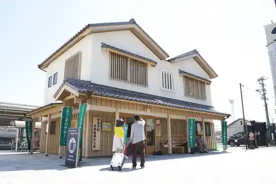
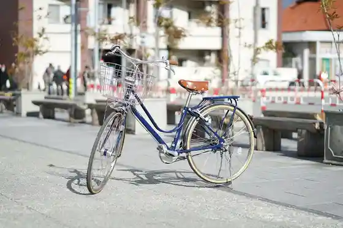
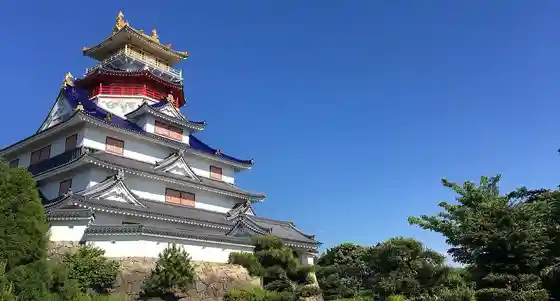
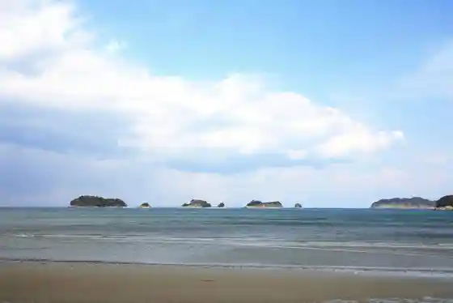

Ise Ekishu Nimotsu Azuka Ri Tokoro
Ise, Mie · 0596-65-6861 · Official / source link

Ise Rentasaikuru (Ise Tourism Association)
Ise, Mie · Official / source link

Tomoiki no Kuni Ise Ninja Kingu Dam
Ise, Mie · 0596-43-2300 · Official / source link

Ryoso Umi no Cho Beach
Ise, Mie · 0596-44-1050 · Official / source link

Ise Nishi Toyohama Town no Himawari Hatake
Ise, Mie · Official / source link
Toyoke Dai Shrine (Gegu Ise Shrine)
Ise, Mie · 0596-24-1111 · Official / source link
Ko Dai Shrine (Naigu Ise Shrine)
Ise, Mie · 0596-24-1111 · Official / source link
Futamigaura Beach
Ise, Mie · 0596-21-5566 · Official / source link
Ise Kaguraba Resort Sen no Mori (Ryusui Puru)
Ise, Mie · 0596-39-1200 · Official / source link
Ta Ko Tera
Ise, Mie · 0596-42-1952 · Official / source link
Futami Shobu Roman Forest
Ise, Mie · 0596-44-1000 · Official / source link
Ito Sho Ha Art Museum
Ise, Mie · 0596-22-2554 · Official / source link
Futamigaura
Ise, Mie · 0596-42-1111 · Official / source link
Kawasaki no Machinami
Ise, Mie · 0596-22-4810 · Official / source link
Oharai Town
Ise, Mie · 0596-65-6091 · Official / source link
Hato Plaza Miso no
Ise, Mie · 0596-22-6602 · Official / source link
Misono B&G Kaiyo Center Puru
Ise, Mie · 0596-36-4511 · Official / source link
Mieken Ei San'ariina Hana no Plaza
Ise, Mie · Official / source link
Minwa no Eki Somin
Ise, Mie · 0596-44-1000 · Official / source link
Makonde Art Museum
Ise, Mie · 0596-42-1192 · Official / source link
Akane Sha
Ise, Mie · 0596-28-5510 · Official / source link
Miyagawa Tsutsumi (Ken Shitei Meisho)
Ise, Mie · 0596-22-7885 · Official / source link
Hinjitsu Kan
Ise, Mie · 0596-42-1111 · Official / source link
Ise Nosambutsu Chokubai Tokoro San Farm Obata
Ise, Mie · 0596-26-0831 · Official / source link
Ise Rikyu Baths
Ise, Mie · 0596-22-0548 · Official / source link
Yamada Bugyo Tokoro Ato
Ise, Mie · 0596-22-7885 · Official / source link
Rikyu In Ato (Rikyu In Park)
Ise, Mie · Official / source link
Futami Okitama Shrine
Ise, Mie · 0596-43-2020 · Official / source link
Kojo Chokubai Maru Ten Main Shop
Ise, Mie · 0596-21-3010 · Official / source link
Zero Kyori Aquarium Ise Shiiparadaisu
Ise, Mie · 0596-42-1760 · Official / source link
Ise Fufu Iwa Meoto Alley
Ise, Mie · 0596-42-1235 · Official / source link
Fufu Iwa
Ise, Mie · 0596-43-2020 · Official / source link
Kongo Sho Tera
Ise, Mie · 0596-22-1710 · Official / source link
Ise Fune Ko Onsen Mitasu Baths
Ise, Mie · 0596-29-4126 · Official / source link
Hasu no Hana (Futami Shobu Roman Forest)
Ise, Mie · 0596-44-1000 · Official / source link
Parufaruko Ise Mise
Ise, Mie · 0596-23-2988 · Official / source link
Asama Sancho Baiten Asama Chaya
Ise, Mie · 0596-22-1248 · Official / source link
Sengu Kan
Ise, Mie · 0596-22-6263 · Official / source link
Kyusho Tera
Ise, Mie · 090-5638-5110 · Official / source link
Kimono no Kitsuke, Wa Komono no Mise (Kimo no Hiyori Aya no)
Ise, Mie · 0120-454-865 · Official / source link
ART and CULTURE Yama Toku
Ise, Mie · 0596-23-8828 · Official / source link
Ise Ko City Sangu Kaido
Ise, Mie · 0596-28-3705 · Official / source link
Asama Sanroku Park Minna no Shibafu Plaza
Ise, Mie · 0596-21-5589 · Official / source link
Shiei Daibutsu Yama Park Yama no Nakayoshi Plaza
Ise, Mie · 0596-21-5589 · Official / source link
Asama Yama
Ise, Mie · 0596-21-5565 · Official / source link
Kintetsu Ujiyamada Eki
Ise, Mie · 0596-28-2767 · Official / source link
Tenku no Posuto Ise Shima Sukai Line
Ise, Mie · 0596-22-1810 · Official / source link
Ise Shima Sukai Line
Ise, Mie · 0596-22-1810 · Official / source link
Okage Alley
Ise, Mie · 0596-23-8838 · Official / source link
Sumiya Mingu Kan Miso Tamari Kura Museum
Ise, Mie · 0596-23-3040 · Official / source link
Ise Kikuichi
Ise, Mie · 0596-28-4933 · Official / source link
Yamada Bugyo Tokoro Memorial Museum
Ise, Mie · 0596-36-8833 · Official / source link
Wakamatsu Ya Ise Tezu Kurikamaboko Hashi Zukuri Workshop
Ise, Mie · 0596-31-0123 · Official / source link
Gorikimarimbirejji
Ise, Mie · 0596-31-0300 · Official / source link
Yume Sho Town
Ise, Mie · 0596-63-6621 · Official / source link
Naigu Chika Sando Hato Ishi
Ise, Mie · Official / source link
Yamatohime Miya (Ko Dai Shrine Betsumiya)
Ise, Mie · 0596-24-1111 · Official / source link
Tsukuyomi Miya (Toyoke Dai Shrine Betsumiya)
Ise, Mie · 0596-24-1111 · Official / source link
Tsukuyomi Miya (Ko Dai Shrine Betsumiya)
Ise, Mie · 0596-24-1111 · Official / source link
Asama Yama Kyozuka Gun
Ise, Mie · 0596-22-1710 · Official / source link
Shrine Choko Kan · Nogyo Kan
Ise, Mie · 0596-22-1700 · Official / source link
Shrine Art Museum
Ise, Mie · 0596-22-5533 · Official / source link
Ise Kawasaki Shonin Kan
Ise, Mie · 0596-22-4810 · Official / source link
Aka Taro Shoppu
Ise, Mie · 0596-22-7000 · Official / source link
Ryugu Sha
Ise, Mie · 0596-43-2020 · Official / source link
Shinzen Lighthouse (Kozakitodai)
Ise, Mie · 0596-42-1111 · Official / source link
Mieken Ei San'ariina
Ise, Mie · 0596-22-7700 · Official / source link
Sarutahiko Shrine
Ise, Mie · 0596-22-2554 · Official / source link
O Ise San Kankoannai Nin
Ise, Mie · Official / source link
Akari no Mise
Ise, Mie · 0596-23-8834 · Official / source link
Daimusutajiamu Ise (Kurata Sanko Sono Kyujo)
Ise, Mie · 0596-22-4323 · Official / source link
Ko Gakkan Daigaku Sagawa Kinen Shinto Museum
Ise, Mie · 0596-22-6471 · Official / source link
Ise Ko City Sangu Kaido Museum
Ise, Mie · 0596-22-8410 · Official / source link
Ise Washi Kan (Taiho Washi Kogyo)
Ise, Mie · 0596-28-2359 · Official / source link
Ten no Iwaya
Ise, Mie · 0596-43-2020 · Official / source link
Matsuo Kan'onji
Ise, Mie · 0596-22-2722 · Official / source link
Hashi Tsukuri Taiken Workshop
Ise, Mie · 0596-23-1721 · Official / source link
Ise Shima Tsurizumu
Ise, Mie · 0596-20-2290 · Official / source link
Fune De Ama San no Ryo Kengaku
Ise, Mie · Official / source link
Ama Santo Fune De Shuyu & Ryo Kengaku & Tsuri BBQ
Ise, Mie · 0596-20-2290 · Official / source link
Otonashi Yama
Ise, Mie · 0596-42-1111 · Official / source link
Ozaki Gaku Do Memorial Museum
Ise, Mie · 0596-22-3198 · Official / source link
Myojo Tera
Ise, Mie · 0596-43-2813 · Official / source link
Jakusho Tera
Ise, Mie · 0596-22-3743 · Official / source link
Ike no Ura Shiisaido Park
Ise, Mie · 0596-44-1050 · Official / source link
Komyo Tera
Ise, Mie · 0596-28-6826 · Official / source link
Matsushita Sha no Dai Kusu
Ise, Mie · 0596-21-5565 · Official / source link
Sakae no Shrine
Ise, Mie · 0596-43-2020 · Official / source link
Obayashi Tera
Ise, Mie · 0596-28-4541 · Official / source link
Segi Tera
Ise, Mie · 0596-28-5372 · Official / source link
Futami Onsen Somin Baths
Ise, Mie · 0596-43-2046 · Official / source link